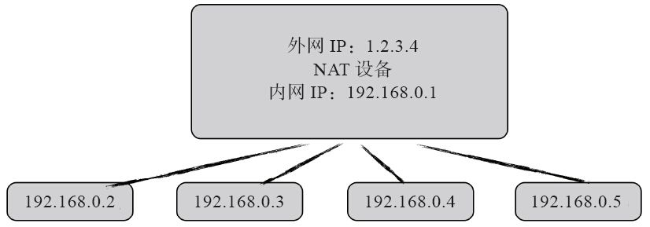
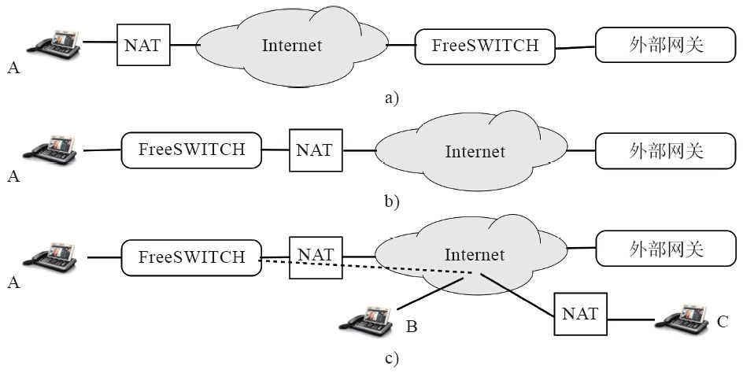

9.4 NAT穿越
默认安装的FreeSWITCH也能很好地工作在NAT环境下，但不可否认，用户的网络环境可能五花八门，因而也不可避免地会遇到NAT问题。适当地解决在NAT网络环境下的内、外网通信问题，就称为NAT穿越。
实际上，SIP/RTP协议本身的特性决定了它与NAT的各种恩怨。NAT涉及的知识比较多，用户不仅要了解FreeSWITCH、SIP协议及跟踪调试技巧，还要了解网络拓扑结构、使用网络设备（如交换机和路由器）的相关参数和特性等。因而对于初学者而言，笔者不建议大家花费时间去研究和解决NAT问题，而是建议在局域网环境中学习FreeSWITCH，等有了一定基础以后再研究NAT环境。
当然NAT问题也不是那么可怕，若初学者有兴趣也不妨读一下本节的内容，即使不为解决NAT的问题，对理解SIP协议以及本节前面讲到的参数配置也是有帮助的。另外，笔者把这部分内容放到本章是也因为它跟mod_sofia模块结合比较紧密。
好了，言归正传。NAT的全称是Network Address Translation（网络地址转换），它最初是为了克服IPv4网络地址不足出现的一项技术。众所周知，IPv4使用32位（4个8位，即4字节）地址空间，因而最多可以表示2 32 个地址。随着Internet的迅速发展，人们需要大量的IP地址，大大超出了IPv4所能提供的地址数量。为了解决IPv4地址空间紧张的问题，RFC1918 [1] 规定了一些私有的IP地址，这些私有的地址存在于路由器后面，它们本身形成一个私有的网络，称为内部网（Intranet，简称内网）。当内网的IP需要与外界的IP（又称公网）通信时，通过路由器提供的网络地址转换（NAT）功能转换成一个合法的外网IP地址来与外界通信。不同的内部网间彼此独立，因而可以复用这些私有的IP地址，这大大提高了IPv4网络的接入能力。
虽然NAT有效解决了IPv4网络上的IP地址短缺问题，但对于飞速发展的互联网来说，还不是终极的解决方案。因此，人们很早就发明了IPv6，它使用128位的地址空间，能表示2 128 个地址，也就是说将来任何可以联网的智能设备，包括家用的微博炉、手表等都可以获取一个IPv6地址。为了推动IPv4向IPv6的过渡，国际IP地址分配机构ICANN [2] 早在几年前就提出了IPv4地址预警，称地址将很快耗尽，但遗憾的是，这项工程还是迟迟没有进展。Anthony Menissale《FreeSWITCH 1.2》中说过：“世界改变得越快，人们就越容易怀旧。技术的进步和革命也是如此。我们的汽车仍然假装有速度指针，你喜欢的网站上仍然使用过时的按钮和开关图片，我们作为社会的一分子，仍然信奉一句话：东西，如果它不坏，就不要去修它” [3] 。
所以，我们还是整天生活在NAT的环境中，不管是在办公室，还是在家里通过路由器上网时。大多数人并未意识到NAT的存在，因为大多数的Web应用都是基于TCP的，NAT对TCP的影响不是很大。但基于SIP的语音通信中，SIP一般用UDP承载，UDP是无连接的协议，因而在NAT穿越方面就更加困难。而更为复杂的是，媒体（语音或视频）数据是在RTP包中传递的，它是与SIP路径不同的另一路径（甚至是更多的路径，比如同时有语音和视频的情况）。虽然SIP也可以通过TCP承载，但RTP为了保持实时性，还需要用UDP传输。因而，我们就不能忽略NAT的影响了。
图9-4所示为一个典型的NAT结构。其中，路由器有两个网络接口，一个用于连接外网，其IP是1.2.3.4，一个用于连接内网，其IP是192.168.0.1。内网的主机IP从192.168.0.2到192.168.0.5，它们把192.168.0.1作为一个网关，即所有与外网的通信都需要经过192.168.0.1转发。如果内网主机要与外界通信，路由器会将内网主机的请求转换成外网的IP地址，因而不管是哪个内网的主机与外界通信，外界的主机看起来都是从1.2.3.4这个路由器的外网IP发出的。同时，路由器会维护一个地址与内网主机间的映射关系，以保证回来的IP能到达相应的主机。这个映射关系是在内网主机首次向外网发包时建立的，此后外网的主机才可以向内网的主机发送信息。建立该映射关系的过程好像是在NAT设备上打了一个“洞”（因而该技术也称为UDP Hole Punching，即打洞），通过该“洞”进行内外网的通信。该洞是有生命周期的，如果在一段时间内没有数据通过，则洞会自动消失。

图9-4 NAT示意图
9.4.1 NAT的种类
NAT有三种类型：静态NAT（Static NAT）、动态地址NAT（Pooled NAT）和网络地址端口转换（Network Address Port Translation，NAPT）。其中静态NAT设置起来最简单；内部网络中的每个主机都被永久映射成外部网络中的某个合法的地址，而动态地址NAT则是在外部网络中定义了的一系列的合法地址，采用动态分配的方法映射到内部网络；NAPT则是把内部地址映射到外部网络的一个IP地址的不同端口上。
前两种类型实际上都不能节省IP地址，我们就不讨论了。NAPT是人们比较熟悉的一种转换方式，它普遍应用于接入设备中，可以将中小型的网络隐藏在一个合法的IP地址后面，这个优点使得这种方式在小型办公室内非常实用，通过从ISP处申请的一个公网IP地址，可以将多台电脑或网络设备通过NAPT接入Internet。
一般来说，NAPT有四种类型，但它实际上又分为两大类：锥型NAT和对称NAT。其中锥型NAT又分为三类，因而一共是四类。简单起见，我们沿用四类的说法来简单讲解（其中前三类属于锥型，最后一类属于对称型）。
（1）Full Cone NAT（全锥型NAT）
内网主机建立一个UDP socket（表示为LocalIP:LocalPort，如192.168.0.2:5060），第一次使用这个socket给外部主机发送数据时，NAT设备（如我们上面讲的路由器）会给其分配一个公网IP、端口对（PublicIP:PublicPort，如1.2.3.4:5060），并记住它们之间的映射关系。以后用这个socket向外面任何主机发送数据都将使用这对PublicIP:PublicPort。此外，任何主机只要知道这个PublicIP:PublicPort就可以给它发送数据，NAT设备会根据它已经记住的映射关系将收到的数据转发到相应的内部主机的LocalIP:LocalPort上。其实简单来说就一句话：内部主机向外打了一个洞，外网的任何主机都可以利用这个洞与它通信 。
（2）Restricted Cone NAT（限制锥型NAT）
内网主机建立一个UDP socket（LocalIP:LocalPort），第一次使用这个socket给外部主机发送数据时NAT设备会给其分配一个公网的PublicIP:PublicPort，以后用这个socket向外面任何主机发送数据都将使用这对PublicIP:PublicPort。此外，如果外部主机想要发送数据给这个内网主机，除了需要知道这个PublicIP:PublicPort外，内网主机在这之前必须用这个socket曾向这个外部主机的IP发送过数据。也就是说，如果内网的主机从来没有往某一公网IP发送过数据，则这个公网IP是不能往内网主机发送数据的，即使它知道PublicIP:PublicPort也不行。按洞的理论来说，就是内部主机向某一外部主机打了一个洞后，只有该外部主机才能利用这个洞 。
（3）Port Restricted Cone NAT（端口限制锥型NAT）
这种NAT与Restricted Cone类似，唯一不同的是，如果外部主机想要给内网主机发送数据，它除了必须知道PublicIP:PublicPort外，而且内部的主机必须事先向该外部主机的IP:Port发送过数据，并且该公网主机必须使用相应的IP:Port通过PublicIP:PublicPort给内网主机发送数据。
可以看出，Poxt Restricted Cone NAT与Restricted Cone相比增加了对外网主机使用的端口的限制。即内部主机向外部主机上一某一程序（一个端口）打了一个洞，则只有该程序可以利用这个洞，其他的不行 。
（4）Symmetric NAT（对称型NAT）
锥型NAT对内网主机的同一socket（LocalIP:Localport）发往任何外网主机的数据均分配一个PublicIP:PublicPort，而对称型NAT会对内网主机同一socket（LocalIP:Localport）发往外部不同主机的数据分配不同的PublicIP:PublicPort映射关系。
详细来讲，内网主机建立一个UDP socket（LocalIP:LocalPort），当用这个socket第一次给外部主机1发送数据时，NAT设备会为其映射一个PublicIP-1:Port-1，以后内网主机发送给外部主机1的所有数据都用这个PublicIP-1:PublicPort-1。如果内网主机同时用这个socket给外部主机B发送数据，第一次发送时，NAT设备会为其分配一个PublicIP-2:PublicPort-2，以后内网主机发送给外部主机2的所有数据都用这个PublicIP-2:Port-2。
如果任何外部主机M想要发送数据给这个内网主机N，N必须曾经用这个socket向这个外部主机M的IP发送过数据，并且M需要知道N向M发送数据时NAT设备为其映射的PublicIP:PublicPort。这样这个外部主机M就可以用自己的IP：AnyPort（即任何端口）给PublicIP:PublicPort发送数据。
对称型NAT相当于对同一内部主机联系不同的外部主机时都需要打不同的洞。
9.4.2 FreeSWITCH的拓扑结构
FreeSWITCH一般有三种拓扑结构，如图9-5所示。

图9-5 常见FreeSWITCH NAT网络拓扑结构
如图9-5a所示，FreeSWITCH运行在公网上，与公网上的其他落地网关设备对接。SIP话机一般位于NAT内部。这种情况一般用于运营VoIP业务的情况。
如图9-5b所示，FreeSWITCH运行在内网上，穿过NAT与公网上的设备对接。SIP话机也在内网上。一般用于公司内部的IP-PBX的情况。
如图9-5c所示，与图9-5b所示不同的是，公网上的用户（如B）也可以穿过NAT向FreeSWITCH注册，或通过FreeSWITCH打电话，而其外网用户通常是公司的外勤或出差人员。这种拓扑结构通常比较复杂，尤其是在希望B能在内网和外网间自由切换的情况下（有时内勤有时外勤，但不希望电脑上的SIP软电话注册地址改来改去）。甚至处于另外一个NAT后面的用户（如C）也希望向FreeSWITCH注册，这种情况称为双重NAT（Double Nat），就更加复杂了。
9.4.3 NAT是怎么影响SIP/RTP通信的
我们来看图9-5a所示的拓扑结构（下面除非特别说明我们都以这种拓扑结构为例）。假设SIP话机的IP地址是192.168.0.2，而路由器的外网IP是1.2.3.4，FreeSWITCH的IP地址是1.2.3.5。如果SIP话机向FreeSWITCH注册，它将发送以下REGISTER消息（省略了其他不需要的字段）：
REGISTER 1000@1.2.3.5 SIP/2.0
Contact: 1000@192.168.0.2:5060
该消息是从192.168.0.2:5060发出的，由于NAT设备进行了网络地址转换，因此FreeSWITCH在收到请求后会认为该消息是从1.2.3.4:5060发出的 [4] 。
大家都已经知道，SIP话机向FreeSWITCH注册是为了让FreeSWITCH记住自己的Contact地址。但如果FreeSWITCH记住了192.168.0.2，由于它没法连通该地址，因此如果有人呼叫1000这个用户就会出现电话打不通的情况，这就是典型的NAT引起的问题。
解决这一问题通常有两种思路：
·如果FreeSWITCH足够聪明，那么它应该知道192.168.0.2是一个内网地址，并且由于它收到的消息是从1.2.3.4:5060发出的，因而它可以记住后者，而不是那个内网地址。
·可以从客户端解决，让客户端想办法知道被NAT设备映射完以后的外网地址和端口号，即1.2.3.4:5060。这个一般靠STUN服务解决。
针对这两种思路的具体的解决办法我们稍后还会讲到。下面我们再来看一下RTP的情况。
SIP走通了以后，如果RTP不通，就会出现电话打通了但没有声音的情况（或者是单通，即一方有声音，另一方没有）。
在第7章我们已经学过，RTP的地址是由SDP信息描述的，具体如下（我们照样省略了其他不相关内容）：
INVITE 9196@1.2.3.5
Content-Type: application/sdp
c=IN IP4 192.168.0.2
m=audio 50452 RTP/AVP 8 0 101
跟SIP消息类似，FreeSWITCH是无法向这个192.168.0.2发送RTP包的，这个问题可以由客户端通过STUN服务解决，也可以由FreeSWITCH端解决。如FreeSWITCH可以在收到第一个RTP包时得知该RTP流对应的外网IP和端口号（如1.2.3.4:50452），以后所有的RTP流都发送到这个NAT设备的外网地址上，NAT设备会将收到的从FreeSWITCH发送过来的RTP包转发到该内网地址上，话机就能“听”到声音了。
上面我们只谈了图9-5a所示的拓扑结构，在图9-5所示的另外两种拓扑结构下，FreeSWITCH就相当于这里说的SIP话机，它跟外网设备通信时就需要通过STUN之类的服务来获取相应的外网IP和端口号。
9.4.4 NAT的穿越方法
通过对9.4.3节的学习，我们知道要解决NAT穿越问题就要解决内、外网地址映射的问题。也就是说，除了NAT设备自己知道这个映射关系以外，SIP客户端（如话机）和服务器（如FreeSWITCH）都需要知道。
在继续尝试解决NAT穿越问题前，我们先做以下的准备：
·了解你的网络环境和拓扑结构。如了解自己的IP地址段、网关IP、外网IP、使用的路由设备厂商和型号、提供接入的服务商或运营商等。另外有一些在线工具可以帮你快速知道自己的外网地址，如你可以直接访问国内的http://ip138.com/或国外的http://ifconfig.me。笔者经常用下列命令获取自己的外网地址：
$ curl ifconfig.me
119.40.26.181
·禁用路由器的ALG（Application Level Gateway）。某些路由器有ALG功能，它们会修改SIP包中的IP地址，“帮助”你进行NAT穿越。但很遗憾的是，它们实现的往往有Bug，而且该功能默认是打开的。FreeSWITCH不需要ALG。
实际上，NAT问题本来是不需要FreeSWITCH来解决的。在理想的情况下，任何可能用于NAT后端的设备要想与外界通信，都必须能自己解决NAT穿越问题。但事实上，现实世界不是理想的国度，很多设备都无法解决NAT穿越问题。因此FreeSWITCH团队通过深入研究，提供了很多方法来帮助解决NAT的穿越问题 [5] 。这些方法在默认的安装下一般都能工作得很好，但在不一般的情况下还是需要手工处理的 [6] 。
1.SIP穿越
FreeSWITCH默认使用ACL来判断对方是否处于一个NAT环境中，配置项如下：
<param name="apply-nat-acl" value="nat.auto"/>
其中，nat.auto是一个ACL，它包含RFC1918规定的私网地址，并去掉了本地网络的地址。当SIP客户端向FreeSWITCH注册时，FreeSWITCH会比较SIP消息中的Contact地址是否包含在这个ACL中，如果包含，说明是来自一个NAT背后的设备，那么它就把其Contact地址自动替换为与该设备对应的外网地址（即SIP包的来源地址，已经被NAT设备转换成了外网地址），因而接下来再有人呼叫它时，FreeSWITCH就能正常给它发INVITE请求了。
下列命令列出了一个SIP客户端通过NAT注册的情况（其中Contact中进行了人工换行）：
recv 557 bytes from udp/[1.2.3.4]:56020 at 04:05:37.636135:
------------------------------------------------------------------------
REGISTER sip:1.2.3.5 SIP/2.0
Contact: <sip:1002@192.168.0.2:56020;rinstance=6622cfa07990b53c>
To: "1002"<sip:1002@1.2.3.5>
From: "1002"<sip:1002@1.2.3.4>;tag=7ae09a77
Call-ID: YjU0OTdhYmRmZTEyZGU5MjM5ZGEyY2I0ZjY0NDhjZDk
User-Agent: Bria 3 release 3.5.0b stamp 69410
注册成功后，可以在FreeSWITCH中查看其注册情况：
freeswitch> sofia status profile internal reg
Registrations:
==============================================================================
Call-ID: YTU5MzZiMjBlODkwNzQ1NGQ1Zjg0OTE3YTUxNGExNWI
User: 1002@1.2.3.5
Contact: "1002" <sip:1002@192.168.0.2:54892;
rinstance=1d165ab726aed220;fs_nat=yes;
fs_path=sip%3A1002%401.2.3.4%3A54892%3B
rinstance%3D1d165ab726aed220>
Agent: Bria 3 release 3.5.0b stamp 69410
Status: Registered(UDP-NAT)(unknown) EXP(2013-08-17 12:51:10) EXPSECS(3658)
可以看到，其中Contact字段中有fs_nat=yes标志，它表示FreeSWITCH已经“聪明”地知道了该客户端是处于一个NAT后面。上面的显示是经过urlencode的，不直观，我们用urldecode [7] 反编码如下：
sip:1002@192.168.0.2:54892;rinstance=1d165ab726aed220;
fs_nat=yes;fs_path=sip:1002@1.2.3.4:54892;rinstance=1d165ab726aed220
从上面的信息可以看到，FreeSWITCH既知道它的内网地址，又知道它的外网地址。以后任何时候FreeSWITCH向这个客户端发消息时，均使用fs_path指定的地址。
2.RTP穿越
解决了SIP穿越问题后，我们再来看RTP是如何穿越的。由于客户端的SDP信息中的IP地址是私网地址，因而FreeSWITCH无法直接给它发RTP包。而且，从9.4.1节我们也了解到，很多NAT设备都只有内网的主机曾经向外网主机发过包以后，才允许外面的包进入。因此FreeSWITCH使用了一个名为RTP自动调整的特性，即FreeSWITCH在SIP协商时给对方一个可用的公网RTP地址，然后等待客户端发送RTP包，一旦它收到RTP包以后，就可以根据对方发包的地址给它发RTP包了。当这种情况发生时，可以在Log中看到类似如下的信息：
[INFO] switch_rtp.c:4753 Auto Changing port from 192.168.1.124:50492 to 1.2.3.4:50492
虽然它不能解决所有问题，但总比不解决要好。当然，由于它没有约定使用SIP协商中指定的IP地址，这种解决办法可能有安全性问题，如黑客可以随机猜一些端口并向这些RTP端口发包，FreeSWITCH收到后将远端地址调整到新的黑客的IP和端口，进而RTP数据全跑到黑客那里去了。所以FreeSWITCH为了防止这个问题，规定这种端口调整只能在电话开始的时候进行，一旦调整过，就不能再进行调整了。
这种自动调整是默认开启的，如果用户不需要该功能，可以在Profile中将其禁掉：
<param name="disable-rtp-auto-adjust" value="true"/>
或者只针对个别的呼叫来禁止自动调整，在呼叫时可以通过设置“rtp_auto_adjust=false”通道变量禁止。
3.其他解决方案
我们前面讲到，FreeSWITCH在默认的情况下就能很好地应对NAT的情况。但在某些网络环境下或对接某些客户端设备时（我们姑且称为“差”设备），以上手段可能还不够。FreeSWITCH还提供了一些设置，这些设置默认是不开启的，如果开启了，可能这些“差”设备就可以工作了，但会影响“好”设备。
有些设备会自动进行NAT穿越，但却把SIP包里的参数改得乱七八糟。FreeSWITCH提供了一个参数，其可以在Profile设置，以实现对这些SIP包进行“深度”检测，进而决定到底该用哪个IP地址。该参数是：
<param name="aggressive-nat-detection" value="true"/>
另外，FreeSWITCH还有一族称为NDLB [8] 的配置参数，可以帮助某些“差”设备，如将aggressive-nat-detection参数配置到用户目录中，它会用接收到的SIP包的源地址改写Contact中的IP地址。
下面一个参数需要配置到Profile中：
<param name="NDLB-force-rport" value="true"/>
要理解NDLB-force-rport这个参数，先来说一下什么是rport [9] 。对于支持rport的设备，在发起请求时会在Via字段中带一个空的rport参数，如：
recv 813 bytes from udp/[1.2.3.4]:5060 at 04:05:37.660375:
------------------------------------------------------------------------
REGISTER sip:1.2.3.5 SIP/2.0
Via: SIP/2.0/UDP 192.168.0.2:5060;branch=z9hG4bK-d8754z-65d2be1ee849d851-1---d8754z-;rport
Contact: <sip:1002@192.168.0.2:5060;rinstance=6622cfa07990b53c>
FreeSWITCH在收到该请求后，发现该SIP包的实际来源地址是1.2.3.4:5060，因此它会将响应包发往该地址，并在Via字段中设置rport的值为实际来源端口值，同时增加received参数，指定来源IP地址。它回应的SIP消息如下：
send 698 bytes to udp/[1.2.3.4]:5060 at 04:05:37.663393:
------------------------------------------------------------------------
SIP/2.0 200 OK
Via: SIP/2.0/UDP 192.168.0.2:56020;branch=z9hG4bK-d8754z-65d2be1ee849d851-1---d8754z-;rport=5060;received=1.2.3.4
SIP客户端在收到该响应后，“学习”到了自己对应的外网地址，因而在接下来重发的注册信息中，Contact地址就可以填外网的地址了。
有意思的是，某些设备支持rport这一功能但在发送请求的时候在Via字段中又没有相应的rport参数。因而在FreeSWITCH开启NDLB-force-rport参数可以认为所有设备请求都带了rport参数，进而打开这些“差”设备的rport功能。需要指出的是，有些设备确定不支持rport，带了该参数可能会导致这些设备不能用，因而该参数的值也可以设置成safe（其他的取值还有client-only和server-only，读者可以自己尝试一下），即仅打开已知可用设备这一功能。
该参数是作用于整个Profile的。有时候在既要支持好设备又要支持差设备的情况下，是否使用该参数不能两全。解决的办法是可以再建立一个新的Profile，单独让这些差设备注册到新的Profile。
NDLB还有其他的参数，有的跟NAT相关，有的不相关。当然了，笔者希望大家永远都用不到这些参数，因为一旦涉及这些参数就会很麻烦，但如果有些设备必须要用这些参数，可以参考http://wiki.freeswitch.org/wiki/NDLB。
好了，接下来就要进入本节的正题了，让我们具体了解其他NAT穿越问题的解决方案。
（1）客户端解决方案
前面我们了解到，FreeSWITCH提供了多种手段来帮助客户端设备穿越NAT，并且在9.4.4节我们也提到，这些工作原来应该是在客户端做的。如果客户端能够知道自己将要被映射出去的外网IP地址和端口，那么它就可以直接在SIP/SDP消息中填上外网地址，因而FreeSWITCH就不用再费劲检测客户端是否有NAT了。
在9.4.4节我们讲到可以使用ifconfig.me之类的服务获取自己的外网IP，但SIP通信中还必须得知道映射的外网端口号。这一工作需要靠STUN [10] 来实现。STUN的原理是：在公网上部署一台STUN服务器，位于NAT后面的客户端设备向它发送一系列的UDP包先在NAT设备上打一个“洞”，STUN服务器取到UDP包的来源地址以后，会回送相关的消息告诉该客户端它被映射的外网地址。
大多数的SIP话机及软电话客户端均可以选择是否启用STUN服务。使用STUN以后，SIP消息的Contact头域中就可以直接填入外网地址，这时在FreeSWITCH端看到的注册信息如下（可以跟FreeSWITCH检测到NAT的情况对比一下）：
freeswitch> sofia status profile internal reg
Registrations:
==============================================================================
Call-ID: MWI3OGU3OTk0ODc1ZTFhMmRhZWZmZmM1ZjkwOTVjMTM
User: 1002@115.28.33.221
Contact: "1002" <sip:1002@119.40.26.181:29054;rinstance=98cf71bfe4dbb8bf>
Agent: Bria 3 release 3.5.0b stamp 69410
Status: Registered(UDP)(unknown) EXP(2013-08-17 12:54:14) EXPSECS(3646)
对比9.4.1节我们容易得出这样的结论，STUN服务对于锥型NAT是有效的，但对于对称型NAT就无能为力了。这是因为锥型NAT对内网的同一个源地址和端口发往任何外网IP地址的数据都映射成同一外网IP和端口，而对称型NAT则对发往不同IP地址的包进行不同的映射，因而在对称NAT的情况下虽然客户端能从STUN服务器学习到外网IP地址和端口号，但是在客户端向真正的SIP服务器发UDP包时，在NAT设备上会映射出另外一个IP及端口号，因而先前从STUN服务器学习到的是无效的。
另外，考虑图9-5c所示拓扑结构，如果互相通信的两个SIP终端分别位于两个对称NAT之后，则它们是无法进行通信的，因为打通一个“洞”需要首先向对方发送数据，而在对称NAT的情况下谁都无法向先向对方发送数据，因而无法实现UDP通信。
TURN [11] 技术主要用来解决对称型NAT的问题的，当然，它对于其他的NAT类型同样有效。使用它需要在公网上部署一台TURN服务器，该服务器作为一个“中间人”对双方的数据进行转发。FreeSWITCH不支持TURN [12] ，在这里我们就不多讲了，有兴趣的读者可以参阅相关资料。
除了STUN和TURN外，还有RSIP（Realm Specific IP）、symmetric RTP等NAT穿越技术，但这些技术应用于不同的网络拓扑时都会各有利弊，无法在所有情况下都保证完美。所以人们一直在寻求一种足够灵活的方案，使用它可以在各种情况下对NAT穿透提供最优的解决方案。ICE技术就是满足这一条件的解决方案。
ICE [13] 的全称是交互式连通建立（Interactive Connectivity Establishment），它其实不是一个新的协议，而是综合利用现有的STUN和TURN等技术，使之在最合适的情况下工作，以弥补单独使用某种协议所带来的固有的缺陷。
在SIP通信中，ICE通过扩展SDP，为RTP媒体提供多个候选的地址（Candidate），这样两个SIP终端之间就可以尝试多个不同的候选地址找到一个最优的通信路径。比如，如果两个SIP终端处于相同的NAT后面，则它们可以直接用内网地址进行通信；如果位于不同的NAT后面，并且是锥型NAT，则他们可以选择从STUN服务器获得的外网地址进行通信；如果是对称型NAT，则只能通过TURN来进行通信了。
（2）FreeSWITCH处于客户端的位置
以上我们讲的大部分是针对FreeSWITCH在公网上作为服务器端的情况。考虑图9-5b所示拓扑结构，当FreeSWITCH需要穿越NAT向外部的网关注册时，它就相当于处在客户端的位置 [14] 。我们一直在说客户端如果处于NAT之后，NAT问题要自己解决，因此，FreeSWITCH也有自己的解决方案。
首先，FreeSWITCH支持通过uPnP或NAT-PMP协议 [15] 在路由器上“打洞”。打洞完成后它就知道了自己将要映射的外网地址了。当然，使用该协议需要路由器支持，在笔者的网络环境下，FreeSWITCH启动时可以看到如下信息，证明FreeSWITCH确实检测到外网的地址了：
[INFO] switch_nat.c:420 Scanning for NAT
[DEBUG] switch_nat.c:170 Checking for PMP 1/5
[ERR] switch_nat.c:201 Error checking for PMP [general error]
[DEBUG] switch_nat.c:425 Checking for UPnP
[INFO] switch_nat.c:434 NAT detected type: upnp, ExtIP: '119.40.26.181'
[DEBUG] switch_nat.c:264 NAT thread configured
[DEBUG] switch_nat.c:275 NAT thread started
也可以在FreeSWITCH中使用如下命令进行验证：
freeswitch> show nat_map
port,proto,proto_num,sticky
5060,udp,0,0
5060,tcp,1,0
5080,udp,0,0
5080,tcp,1,0
4 total.
上述命令显示了4个端口映射关系，下列命令可以看到映射后的外网地址：
4 total. freeswitch> nat_map status
Nat Type: UPNP, ExtIP: 119.40.26.181
NAT port mapping enabled.
port,proto,proto_num,sticky
5060,udp,0,0
5060,tcp,1,0
5080,udp,0,0
5080,tcp,1,0
其中，ExtIP:119.40.26.181就表示FreeSWITCH是通过uPnP学习到的外网地址。
FreeSWITCH检测到NAT以后，会设置Profile的外网SIP和RTP的IP。下列命令显示了external Profile当前的Ext-SIP-IP和Ext-RTP-IP：
freeswitch@seven> sofia status profile external
================================================================
Name external
Domain Name N/A
Auto-NAT true
DBName sofia_reg_external
Pres Hosts 192.168.1.124,192.168.1.124
Dialplan XML
Context public
Challenge Realm auto_to
RTP-IP 192.168.1.124
Ext-RTP-IP 119.40.26.181
SIP-IP 192.168.1.124
Ext-SIP-IP 119.40.26.181
其中Ext-SIP-IP和Ext-RTP-IP是在与外网的服务器通信时用的。它在FreeSWITCH中默认的配置（在external.xml中）如下：
<param name="ext-rtp-ip" value="auto-nat"/>
<param name="ext-sip-ip" value="auto-nat"/>
其中，auto-nat说明它试图自动检测到NAT外网的地址。如果路由器不支持uPnP及NAT-PMP协议，那么可以在这里填入一个stun服务器的地址，让它从stun服务器获取，如：
<param name="ext-sip-ip" value="stun:stun.freeswitch.org"/>
<param name="ext-rtp-ip" value="stun:stun.freeswitch.org"/>
注意，stun.freeswitch.org可以做测试用，但它不保证永远可用。如果使用上述STUN服务不能正常获取IP，则可以尝试其他STUN服务器。在网上可以找到好多免费的STUN服务器，当然需要自己运营SIP服务的应该自己搭建STUN服务器。
FreeSWITCH提供了一个stun API命令用于测试STUN服务器是否能正确返回外网的IP及端口号。下列命令检测到服务器是正常的：
freeswitch> stun stun.freeswitch.org
119.180.70.163:50285
下列命令则不能返回正常的结果，因为我们使用的不是一个有效的STUN服务器：
freeswitch > stun www.freeswitch.org
-STUN Failed! [Timeout]
如果不使用STUN，也可以手工找出路由器的外网IP，有以下两种设置方法：
<param name="ext-sip-ip" value="autonat:119.40.26.181"/>
<param name="ext-rtp-ip" value="autonat:119.40.26.181"/>
<param name="ext-sip-ip" value="119.40.26.181"/>
<param name="ext-rtp-ip" value="119.40.26.181"/>
其中，上述两种配置方法是差不多的，只不过带了“autonat:”前缀以后FreeSWITCH会更智能一些，读者可以自己尝试，看看带与不带有什么区别，这里就不多讲了。最后，你也可以设置一个DNS，如host:sip.example.com，通过域名解析获得外网的IP地址。
（3）其他
一般来说，FreeSWITCH足够智能，使用默认的配置就够用了。但FreeSWITCH并不能帮你解决所有NAT的问题，实际使用过程中还得具体问题具体分析。比如你可能为了兼容某些设备改了一些Profile的参数，同时导致另外一些本来好用的设备不好用了。或者，你修改了ext-sip-ip/ext-rtp-ip后外部的用户注册好用了，但NAT内部用户打电话却有问题了。大多数情况下，一个Profile通过设置适当的参数就能解决这些问题。但如果你遇到的不是上述的“大多数”的情况，那么可以通过创建多个Profile来解决，让某些设备注册到其中一个Profile，另一拨人注册到另一个Profile。当然同时使用多个Profile还需要一些设置技巧，我们将在后面的实战章节中深入探讨。
另外，考虑图9-5c所示拓扑结构，如果FreeSWITCH是企业内部的PBX，员工可能经常会在办公室A或外部B（家里）之间换来换去，那么它可能要在办公室里向内网地址192.168.0.2注册，在外部时就向1.2.3.4注册。每次改来改去比较麻烦。这种情况可以在企业内部部署DNS服务器通过DNS解决；另外有的路由器设备支持所谓“发夹”（Hairpin）的功能，通过这个功能可以解决该问题，有条件的读者也可以尝试一下，因为笔者没有见过这种路由设备，在这里就不多讲了。
[1] http://tools.ietf.org/html/rfc1918。它规定的私有IP地址有：A类：10.x.x.x；B类；172.16.x.x~172.31.x.x；C类：192.168.x.x。
[2] CANN全称为The Internet Corporation for Assigned Names and Numbers，即互联网名称与数字地址分配机构。
[3] The more things change,the more everybody wants it to stay the same.It's just a part of how technology evolution works.Our cars still pretend to have speedometer needles;the graphics on your favorite website look like an old-fashioned set of buttons and switches.We as a society also try to live by the motto:"If it ain't broke,don't fix it!"
[4] 路由器映射的端口号也可能不是5060，比如，如果有两个话机同时注册，另一个映射可能成5061。
[5] To be honest,the original stance of the FreeSWITCH developers on the NAT issue was,"Not our problem!"In an ideal world,every device behind aNAT firewall is well aware of its circumstances and can successfully solve its own problems.Unfortunately,we do not live in an ideal world(of course if we were in an ideal world,none of us would have ajob because there would be no problems to solve).So we decided,"OK fine,we'll give it ashot!"We soon learned that our users had amyriad of devices that they wanted to use with FreeSWITCH,but these devices had absolutely no idea how to deal with NAT.Soon,we began the monumental task of developing techniques to allow these devices to work despite their shortcomings.NAT is a vicious opponent and the faint-hearted do not stand achance to survive.——摘自《FreeSWITCH 1.2》
[6] Anthony也说过：“如果你觉得NAT问题这么令人困惑，请自我安慰一下，实际上我们已经尽力把这个问题简化了。如果现在你还是觉得它很复杂，实际情况是它以前更差。”原文是：“If you find this whole thing to be completely confusing,take solace in the fact that we have actually simplified it for you.So while it may seem to be crazy right now,the fact is that it was much worse before.”——摘自《FreeSWITCH 1.2》
[7] 这里有一个实用的站长工具：http://tool.chinaz.com/Tools/URLEncode.aspx。
[8] No Device Left Behind，不遗弃任何设备。参见：http://wiki.freeswitch.org/wiki/NDLB。
[9] 参见：http://www.ietf.org/rfc/rfc3581.txt。
[10] Session Traversal Utilities for NAT，即NAT会话穿越工具。参见：http://zh.wikipedia.org/zh-cn/STUN。
[11] Traversal Using Relay NAT，即使用转发方式进行穿越的NAT。参见：http://zh.wikipedia.org/wiki/TURN。
[12] 但支持TURN的SIP客户端可以与FreeSWITCH配合工作。
[13] 参见：http://zh.wikipedia.org/wiki/互动式连接建立。
[14] 当然，其他的SIP客户端还可以向它注册，它还是服务器，如图9-5c所示。
[15] uPnP称为Universal Plug and Play，即通用即插即用。NAT-PMP称为NAT Port Mapping Protocol，即NAT端口映射协议。它们主要用来在NAT设备上打洞，分别参见http://zh.wikipedia.org/wiki/Upnp和http://en.wikipedia.org/wiki/NAT-PMP。